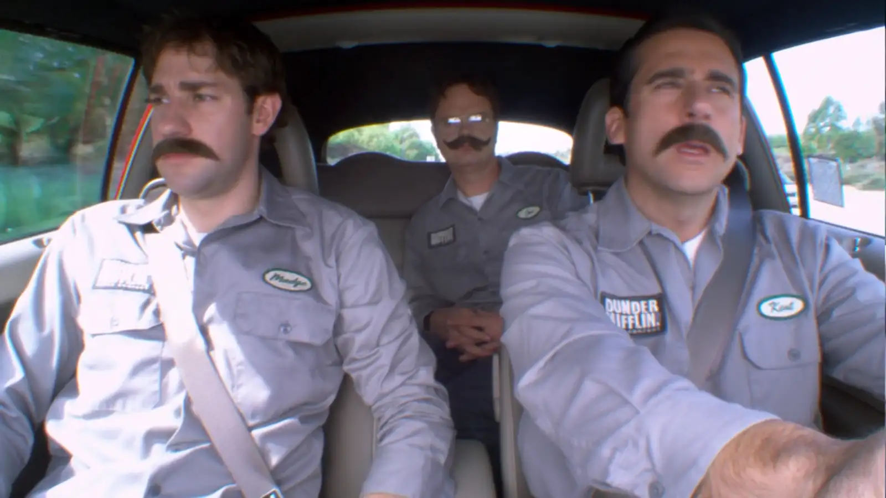

The Office
Bienvenidos a Dunder Mifflin: Tu Fuente Definitiva de "The Office"
"The Office" es una de las comedias de situación más icónicas de la televisión estadounidense, conocida por su ingenioso humor, personajes entrañables y su estilo de falso documental. La serie sigue las vidas cotidianas de los empleados de la sucursal de Dunder Mifflin, una empresa papelera en Scranton, Pensilvania. A través de nueve temporadas, "The Office" se ha ganado un lugar especial en los corazones de millones de fans alrededor del mundo.
¿Qué Encontrarás Aquí?
En nuestro sitio web dedicado a "The Office", te ofrecemos una experiencia completa y detallada para los fans de la serie. Aquí encontrarás todo lo que necesitas para revivir tus momentos favoritos y descubrir detalles fascinantes sobre la vida en Dunder Mifflin
- Personajes: Perfiles detallados de todos los empleados de Dunder Mifflin, acompañados de fotos, nombres y breves descripciones para que conozcas a cada uno de ellos a fondo.
- Historia y Orígenes: Explora los orígenes de "The Office", desde su adaptación de la versión británica hasta su desarrollo en una de las comedias más queridas de la televisión estadounidense.
- Desarrollo y Escritura: Descubre el proceso creativo detrás de la serie, incluyendo el trabajo del talentoso equipo de escritores y la improvisación que hizo de "The Office" una serie única.
- Curiosidades y Detrás de Cámaras: Datos interesantes y anécdotas sobre la producción de la serie.
- Multimedia: Una galería de fotos para que revivas tus momentos favoritos.
